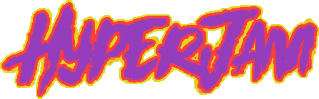

This article is a work in progress
More work needs to be done on this article, such as context, and fixing code
14/08/2018
More work needs to be done on this article, such as context, and fixing code
 HyperJam is the name of a currently ongoing webjam that was first started by Bobzilla (Wizard Cat) in August of 2018. The theme for the webjam was that of an alternate history.
On the official webpage for the webjam it gives the example of "What if Abraham Lincoln never existed? What if Germany won World War 2?? What if the internet never existed?".
This is so far the second time that there has been a webjam hosted on Neocities, the first time was in October 2017, with SpookyJay's WebsiteJam.
It should also be noted that this is not the first time that Bobzilla was apart of a webjam, the first was simply known as "WebJam", however, it never took off.